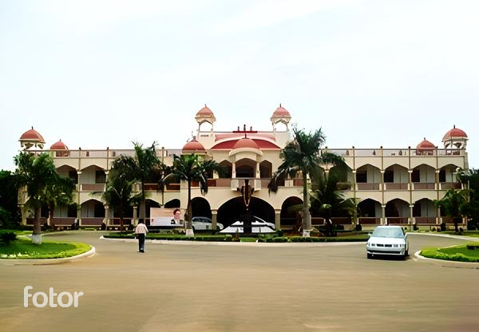

MVGR COLLEGE OF ENGINEERING
About HOME DEPARTMENTS FACULTY CONTACT US
| Ranking | Statistics | Value |
|---|---|---|
| Ranked 76 in India among Top 100 Private Engineering Institute by i3RC Times Rankings 2018 and Ranked 95 including universities by Times Engineering survey and MBA course Ranked 89 by NIRF in 2017 |
Campus spread across 60+ Acres
1000+ Students Intake
250+ competent Faculty
17+ Visiting Faculty from industry
|
Research Oriented Holistic Education with focus on Academics & Value Addition.
Internships/ Industry training/ Live projects
376/ 64/ 6
|